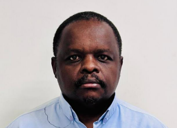

2026 — Full‑Stack Developer in Motion
Building real applications, mastering React, Node, and system design fundamentals.

I’m a full‑stack developer and engineering specialist based in Riyadh. My work blends hands‑on technical problem‑solving with a passion for building digital products that make life easier.
Building real applications, mastering React, Node, and system design fundamentals.
Senior Training Specialist at Almarai, bridging engineering, operations, and technical communication.
Experience across Riyadh, Houston, and Nairobi shaped my global perspective and problem‑solving approach.